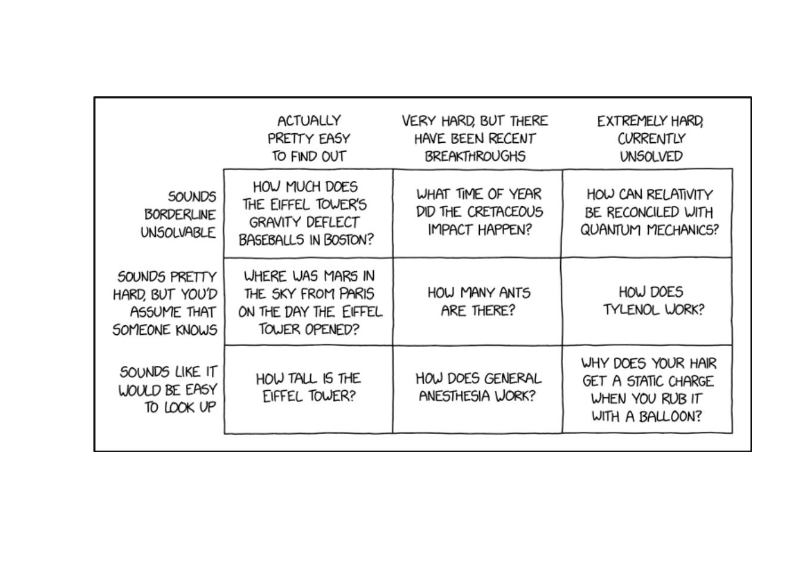
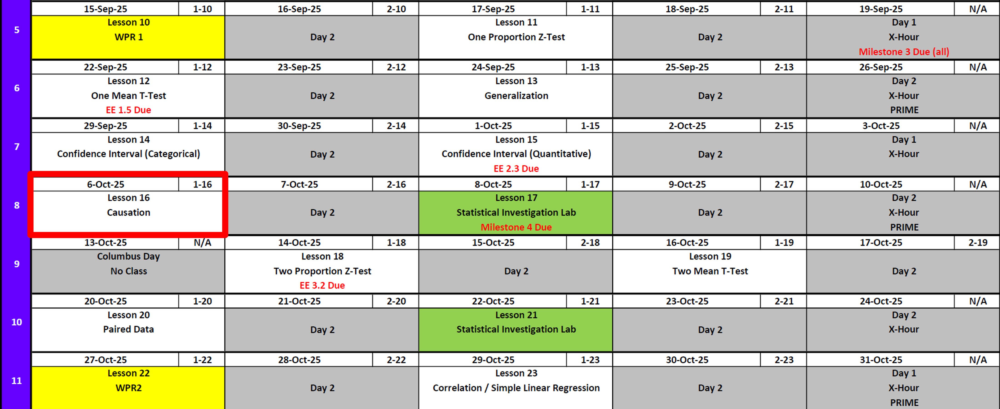
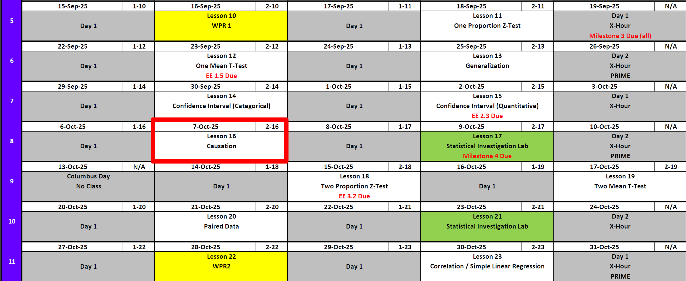
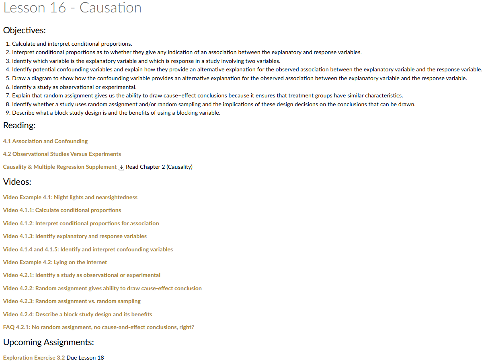
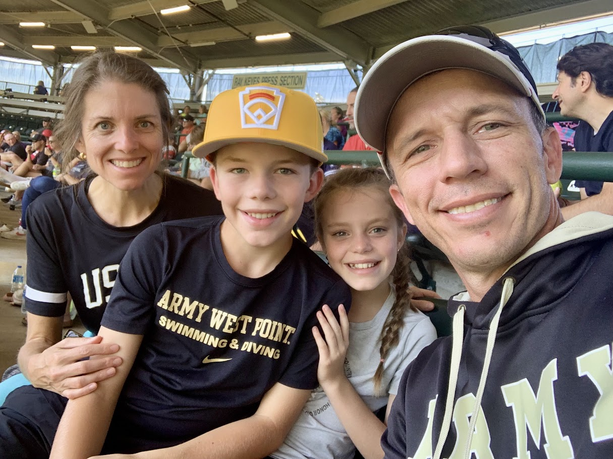
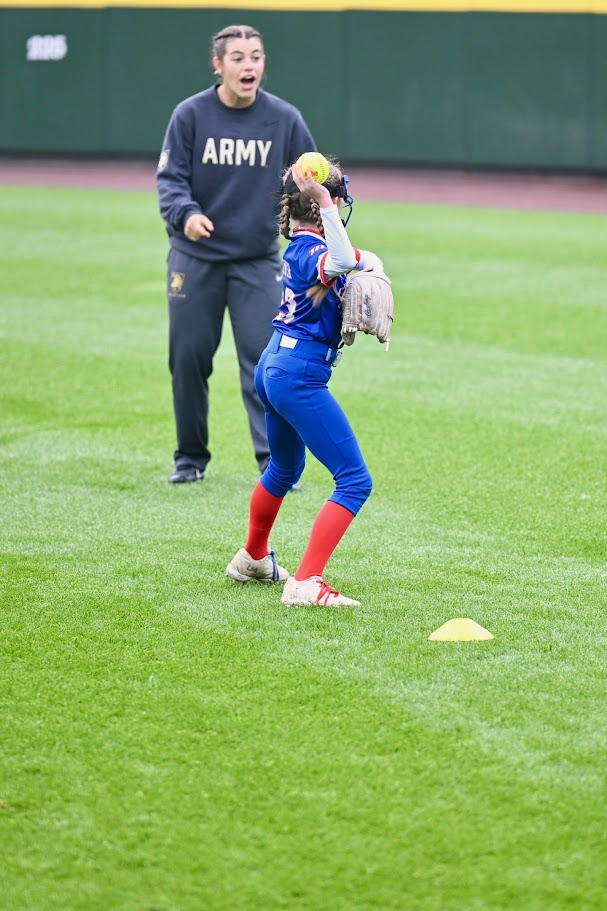
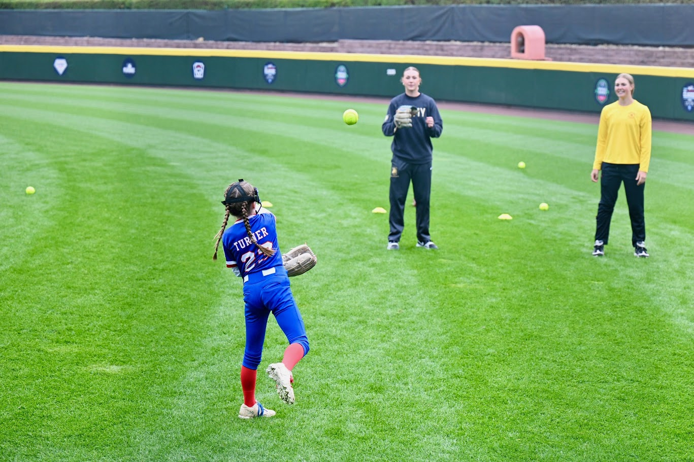
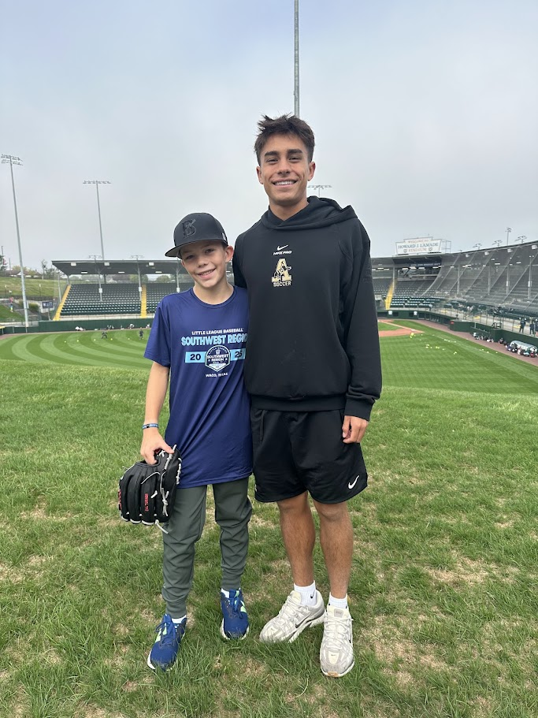
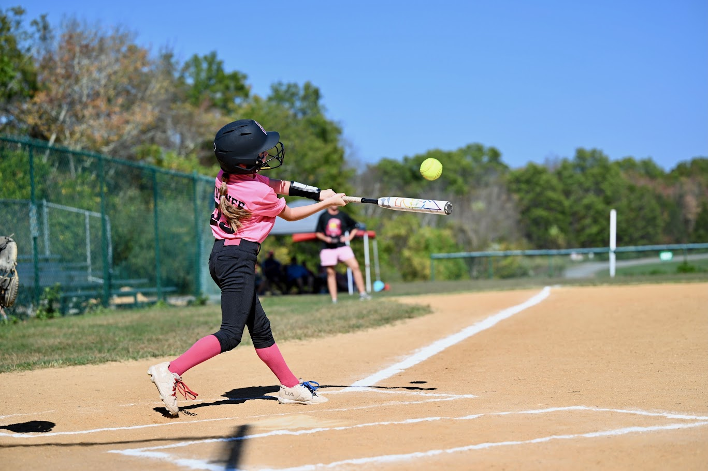
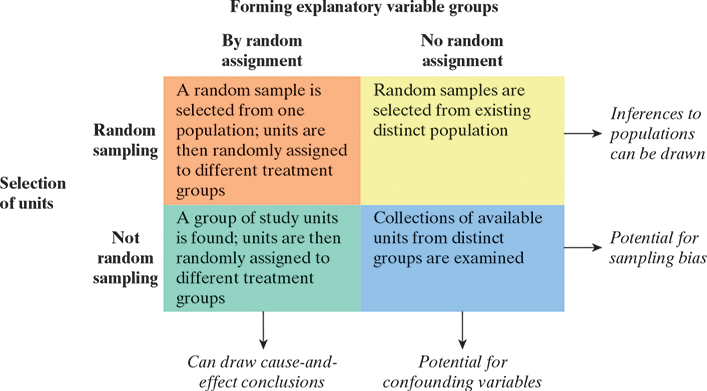

Lesson 16: Causation
Lesson Administration
Calendar
Day 1 (Swap Lesson 17 and Lesson 18)

Day 2 (Swap Lesson 17 and Lesson 18)


Milestone 4
- Lesson 17
- Milestone 4
- With partner
- Write 1-2 paragraphs per article summarizing the articles topic with a take away for its insight on your project.
- Make updates from Milestone 3 feedback.
- Fill out Annex B for my comments on Milestone 3.
- Turn in EVERYTHING in your working write up.
- Keep your binder up-to-date, but I don’t want to see it.
SIL 1
Lesson 17Lesson 18- 25 Points!
- Like a WPR What does that mean?!!
- Read ahead
Exploration Exercise 2.3
- ⏰ Due 0700 on Lesson 18
- Lets take a look at it
- Day 1: Tuesday, 14 Oct 2025
- Day 2: Wednesday, 15 Oct 2025
Math 1
NotePreviously 4-0
5-0

Reese





Running Review
Review: \(z\)-Tests for One Proportion
For all cases:
\(H_0:\ \pi = \pi_0\)
\[ z = \frac{\hat{p} - \pi_0}{\sqrt{\frac{\hat{p}\,(1-\hat{p})}{n}}} \]
| Alternative Hypothesis | Formula for \(p\)-value | R Code |
|---|---|---|
| \(H_A:\ \pi > \pi_0\) | \(p = 1 - \Phi(z)\) | p_val <- 1 - pnorm(z_stat) |
| \(H_A:\ \pi < \pi_0\) | \(p = \Phi(z)\) | p_val <- pnorm(z_stat) |
| \(H_A:\ \pi \neq \pi_0\) | \(p = 2 \cdot (1 - \Phi(|z|))\) | p_val <- 2 * (1 - pnorm(abs(z_stat))) |
Where:
- \(\hat{p} = R/n\) (sample proportion)
- \(\pi_0\) = hypothesized proportion under \(H_0\)
- \(\Phi(\cdot)\) = cumulative distribution function (CDF) of the standard normal distribution
Validity Conditions
- Number of successes and failures must be greater than 10.
Confidence Interval for \(\pi\) (one proportion)
\[ \hat{p} \;\pm\; z_{\,1-\alpha/2}\,\sqrt{\frac{\hat{p}\,(1-\hat{p})}{n}} \]
Review: \(t\)-Tests for One Mean
For all cases:
\(H_0:\ \mu = \mu_0\)
\[ t = \frac{\bar{x} - \mu_0}{s / \sqrt{n}} \]
| Alternative Hypothesis | Formula for \(p\)-value | R Code |
|---|---|---|
| \(H_A:\ \mu > \mu_0\) | \(p = 1 - F_{t,df}(t)\) | p_val <- 1 - pt(t_stat, df) |
| \(H_A:\ \mu < \mu_0\) | \(p = F_{t,df}(t)\) | p_val <- pt(t_stat, df) |
| \(H_A:\ \mu \neq \mu_0\) | \(p = 2 \cdot (1 - F_{t,df}(|t|))\) | p_val <- 2 * (1 - pt(abs(t_stat), df)) |
Where:
- \(\bar{x}\) = sample mean
- \(\mu_0\) = hypothesized mean under \(H_0\)
- \(s\) = sample standard deviation
- \(n\) = sample size
- \(df = n - 1\) (degrees of freedom)
- \(F_{t,df}(\cdot)\) = CDF of Student’s \(t\) distribution with \(df\) degrees of freedom
Confidence Interval for \(\mu\) (one mean)
\[ \bar{x} \;\pm\; t_{\,1-\alpha/2,\;df}\,\frac{s}{\sqrt{n}}, \qquad df = n-1 \]
Interpreting the \(p\)-value
Rejecting \(H_0\)
> Since the \(p\)-value is less than \(\alpha\) (e.g., \(0.05\)), we reject the null hypothesis.
> We conclude that there is sufficient evidence to suggest that [state the alternative claim in context].Failing to Reject \(H_0\)
> Since the \(p\)-value is greater than \(\alpha\) (e.g., \(0.05\)), we fail to reject the null hypothesis.
> We conclude that there is not sufficient evidence to suggest that [state the alternative claim in context].Strength of evidence: Smaller \(p\) means stronger evidence against \(H_0\).
Other Notes
Generalization: We can generalize results to a larger population if the sample is random and representative of that population.
Causation: We can claim causation only if the study design is a randomized experiment. Observational studies can show associations, but not cause-and-effect.
Parameters vs. Statistics: A parameter is a fixed (but usually unknown) numerical value describing a population (e.g., \(\mu\), \(\sigma\), \(\pi\)). A statistic is a numerical value computed from a sample (e.g., \(\bar{x}\), \(s\), \(\hat{p}\)).
- Parameters = target (what we want to know).
- Statistics = evidence (what we can actually measure).
- We use statistics to estimate parameters, and because different samples give different statistics, we capture this variability with confidence intervals.
- Parameters = target (what we want to know).
| Quantity | Population (Parameter) | Sample (Statistic) |
|---|---|---|
| Center (mean) | \(\mu\) | \(\bar{x}\) |
| Spread (SD) | \(\sigma\) | \(s\) |
| Proportion “success” | \(\pi\) | \(\hat{p}\) |
EE1.5 Review
Scenario
Just like handedness where people prefer to use one hand over another, eye dominance, sometimes called eyedness, is the tendency to prefer to see using one eye over the other. Interestingly though the side of the dominant eye does not always match that of the dominant hand. Let’s investigate whether people are equally likely to have left-eye or right-eye dominance by collecting some data from you and comparing to data from other classes.
Problem 2
- What are the observational units?
NoteSolution
Cadets (or people).
- What is the variable that is recorded?
NoteSolution
Eye dominance (left or right).
- Describe the parameter of interest in words.
NoteSolution
π = The proportion of people who are right eye dominant.
- If right eye and left eye dominance are equally prevalent, what value of π?
NoteSolution
π = 0.5.
Null hypothesis: H₀: π = 0.5.
- If people are more likely to be right eye dominant?
NoteSolution
π > 0.5.
Alternative hypothesis: Hₐ: π > 0.5.
Problem 3
In a study of a cadet company 71 out of 112 cadets sampled were right eye dominant.
Calculate the sample proportion who are right eye dominant.
Sample size
NoteSolution
112
Problem 4
Sample proportion
NoteSolution
\(\frac{71}{112} = 0.6339\)
Problem 5 and 6
Simulation based
Problem 7
According to this convention, is the sample size large enough in this study to use the normal approximation and theory-based inference? Justify your answer.
Check validity condition for theory-based inference.
NoteSolution
Yes. 71 successes and 41 failures, both ≥ 10.
Validity Conditions The normal approximation can be thought of as a prediction of what would occur if a simulation-based analysis was carried out. Many times this prediction is valid, but not always. It is only valid when the condition (at least 10 successes and at least 10 failures) is met.
Problem 8
Use the formula to determine the theoretical standard deviation of the sample proportion.
Theoretical SD using formula.
\(sd = \sqrt{\frac{\pi(1−\pi)}{n}}\)
NoteSolution
\(sd = \frac{0.5(1−0.5)}{112} = .0472\)
Problem 9
Use the predicted value of the standard deviation from #8 to calculate the standardized statistic (z).
\(z = \frac{\hat{p} - \pi_0}{sd}\)
Calculate z by hand.
NoteSolution
z = \(\frac{(0.6339 − 0.5)}{0.0472} = 2.835\)
Problem 10
Theoretical p-value.
NoteSolution
\(p \;=\; P(Z \ge 2.835) \;=\; \displaystyle \int_{2.835}^{\infty} \phi(z)\,dz \;=\; 1 - \Phi(2.835)\)
1 - pnorm(2.835) # 0.0023Theoretical p ≈ 0.0023
Problem 11
Simulation based
Problem 12
Use the sample data to test the claim that π = 2/3 (two-sided).
- Hypotheses.
NoteSolution
H₀: π = 2/3
Hₐ: π ≠ 2/3
- Standardized statistic.
Reminder:
\(\hat{p} = 71/112 = 0.6339\)
\(p_0 = 2/3\)
\(n=112\)
\[ z \;=\; \frac{\hat p - \pi_0}{\sqrt{\pi_0(1-\pi_0)/n}} \]
NoteSolution
\[ \; z = \; \frac{0.6339 - \tfrac{2}{3}}{\sqrt{\tfrac{2}{3}\cdot \tfrac{1}{3} / 112}} \;\approx\; -0.736 \]
Standardized statistic: \(z \approx -0.736\)
- P-value.
NoteSolution
Two-sided: \[ p \;=\; 2\,P\!\left(Z \ge |z|\right) \;=\; 2\bigl(1-\Phi(|{-0.736}|)\bigr) \;\approx\; 0.462 \]
2 * (1 - pnorm(abs(z)))
0.4619682Two-sided p-value: \(p \approx 0.462\)
- Conclusion.
NoteSolution
Fail to reject H₀; the data are consistent with \(\pi = 2/3\).
Problem 13
In a small class of 14 students, nine were right-eye dominant.
Why not use theory-based methods for n=14 class?
NoteSolution
Too small: 9 successes and 5 failures (< 10 failures). See Validity Consitions
Problem 14
Use the theory-based methods anyway (two-sided test for a small class with 9 right-eye dominant out of 14).
- Hypotheses.
NoteSolution
\(H_0:\ \pi = 0.5\)
\(H_a:\ \pi \ne 0.5\)
- Standardized statistic.
Reminder
\(\hat{p} = 9/14 = 0.6429\)
\(\pi_0 = 0.5\)
\(n = 14\)
\[ z \;=\; \dfrac{\hat p - \pi_0}{\sqrt{\pi_0(1-\pi_0)/n}} \]
NoteSolution
\[ \; \dfrac{0.6429 - 0.5}{\sqrt{0.5(1-0.5)/14}} \;\approx\; 1.069 \]
Standardized statistic: \(z \approx 1.069\)
- P-value.
NoteSolution
Two-sided:
\(p = 2\,P(Z \ge |z|) = 2\bigl(1-\Phi(|1.069|)\bigr) \approx 0.285\)
2 * (1 - pnorm(abs(z)))Two-sided p-value: \(p \approx 0.285\)
- Conclusion.
NoteSolution
At typical significance levels, fail to reject \(H_0\). With \(n=14\), the theory-based result is \(p\approx 0.285\); note the normal approximation can be poor for small samples.
Causation
- Coffee Drinking and Cancer
Early studies suggested coffee drinkers had higher cancer rates.- Confounder: Smoking — coffee drinkers were also more likely to smoke, and smoking causes cancer.
- Health Supplements and Longevity
Supplement users often appeared healthier and lived longer in studies.- Confounder: Health-conscious lifestyle — people taking supplements also tended to eat better, exercise, and get regular medical care.
- Police Officers and Crime Rates
More police officers in an area were linked to higher crime counts.- Confounder: City size — larger cities naturally have both more crime and more police.

- Random sampling + Random assignment (cause + generalize)
- Randomly sample 200 West Point cadets from all classes.
- Randomly assign half to a 6-week push-up volume plan (daily small sets) and half to a strength plan (fewer, heavier weighted push-ups).
- Outcome: change in max push-ups in 2 minutes.
- Inference: Can claim causation and generalize to cadets.
- Random sampling + No random assignment (generalize, not cause)
- Randomly sample 200 cadets; classify them by the push-up routine they already follow (volume vs strength), no reassignment.
- Compare change in 2-minute max after 6 weeks.
- Confounding: motivation, prior fitness, schedule differences.
- Inference: Can generalize to cadets who choose each routine, but not claim causation.
- Not random sampling + Random assignment (cause, not generalize)
- Convenience sample: one company (≈200 cadets) volunteers.
- Within that company, randomly assign cadets to volume vs strength plans.
- Outcome: change in 2-minute max.
- Inference: Can claim causation for this company, but limited generalizability.
- Not random sampling + No random assignment (confounding + bias)
- Convenience groups: compare two available companies that already use different push-up plans (volume vs strength).
- No random sampling and no reassignment.
- Confounding: cadre emphasis, additional PT, culture, sleep.
- Inference: Neither causation nor broad generalization is supported.
Example Problems
Elbow-to-Forearm Measurement Study
We want to investigate the elbow-to-forearm length of cadets.
A commonly cited average for adults is 26 inches.
Research Question 1: Do West Point cadets have longer forearms than 26 inches on average?
- Identify the parameter of interest.
- State the null and alternative hypotheses in symbolic form.
- Use the class data to carry out the test at \(\alpha = 0.05\).
Research Question 2: Is the average elbow-to-forearm length of cadets different from 26 inches?
- Identify the parameter of interest.
- State the null and alternative hypotheses in symbolic form.
- Use the class data to carry out the test at \(\alpha = 0.05\).
Construct and interpret a \(95\%\) confidence interval for the mean forearm length.
Finally, compare your \(95\%\) confidence interval with the results of the two-sided hypothesis test.
- Do they agree?
- Why or why not?
Long Forearm Proportion Study
It turns out that people with forearms over 28 inches are considered long.
We want to investigate the proportion of cadets who have long forearms.
Suppose 30% is considered the reference value for the population.
Research Question 1: Is the proportion of cadets with long forearms more than 30%?
- Identify the parameter of interest.
- State the null and alternative hypotheses in symbolic form.
- Use the class data to carry out the test at \(\alpha = 0.10\).
Research Question 2: Is the proportion of cadets with long forearms different from 30%?
- Identify the parameter of interest.
- State the null and alternative hypotheses in symbolic form.
- Use the class data to carry out the test at \(\alpha = 0.10\).
Construct and interpret a \(90\%\) confidence interval for the proportion of cadets with long forearms.
Finally, compare your \(90\%\) confidence interval with the results of the two-sided hypothesis test.
- Do they agree?
- Why or why not?
Before you leave
Today:
- Any questions for me?
Upcoming Graded Events
- WPR 2: Lesson 22